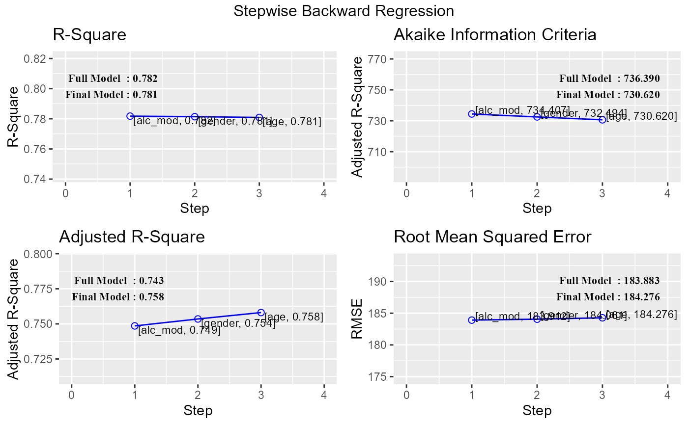
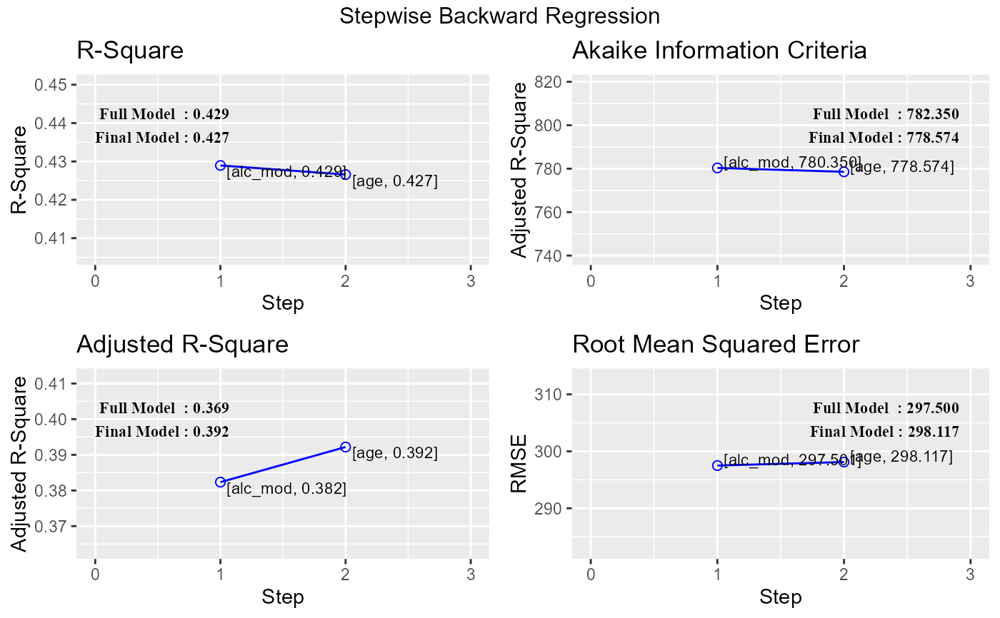

Build regression model from a set of candidate predictor variables by removing predictors based on p values, in a stepwise manner until there is no variable left to remove any more.
ols_step_backward_p(model, ...) # S3 method for default ols_step_backward_p( model, prem = 0.3, hierarchical = FALSE, progress = FALSE, details = FALSE, ... ) # S3 method for ols_step_backward_p plot(x, model = NA, print_plot = TRUE, ...)
Arguments
| model | An object of class |
|---|---|
| ... | Other inputs. |
| prem | p value; variables with p more than |
| hierarchical | Logical; if |
| progress | Logical; if |
| details | Logical; if |
| x | An object of class |
| print_plot | logical; if |
Value
ols_step_backward_p returns an object of class "ols_step_backward_p".
An object of class "ols_step_backward_p" is a list containing the
following components:
final model; an object of class lm
selection metrics
Deprecated Function
ols_step_backward() has been deprecated. Instead use ols_step_backward_p().
References
Chatterjee, Samprit and Hadi, Ali. Regression Analysis by Example. 5th ed. N.p.: John Wiley & Sons, 2012. Print.
See also
Other variable selection procedures:
ols_step_all_possible(),
ols_step_backward_aic(),
ols_step_best_subset(),
ols_step_both_aic(),
ols_step_forward_aic(),
ols_step_forward_p()
Examples
# stepwise backward regression model <- lm(y ~ ., data = surgical) ols_step_backward_p(model) #> #> #> Elimination Summary #> -------------------------------------------------------------------------- #> Variable Adj. #> Step Removed R-Square R-Square C(p) AIC RMSE #> -------------------------------------------------------------------------- #> 1 alc_mod 0.7818 0.7486 7.0141 734.4068 183.9121 #> 2 gender 0.7814 0.7535 5.0870 732.4942 184.0610 #> 3 age 0.7809 0.7581 3.1925 730.6204 184.2762 #> -------------------------------------------------------------------------- # stepwise backward regression plot model <- lm(y ~ ., data = surgical) k <- ols_step_backward_p(model) plot(k)   # selection metrics k$metrics #> step variable r2 adj_r2 aic sbic sbc mallows_cp #> 1 1 alc_mod 0.7817703 0.7485615 734.4068 584.2757 752.3077 7.014100 #> 2 2 gender 0.7814169 0.7535127 732.4942 581.9383 748.4061 5.086996 #> 3 3 age 0.7809054 0.7580831 730.6204 579.6377 744.5433 3.192498 #> rmse #> 1 183.9121 #> 2 184.0610 #> 3 184.2762 # final model k$model #> #> Call: #> lm(formula = paste(response, "~", paste(preds, collapse = " + ")), #> data = l) #> #> Coefficients: #> (Intercept) bcs pindex enzyme_test liver_test alc_heavy #> -1178.330 59.864 8.924 9.748 58.064 317.848 #> # hierarchical selection model <- lm(y ~ bcs + alc_heavy + pindex + enzyme_test + liver_test + age + gender + alc_mod, data = surgical) ols_step_backward_p(model, 0.1, TRUE) #> #> #> Elimination Summary #> ---------------------------------------------------------------------------- #> Variable Adj. #> Step Removed R-Square R-Square C(p) AIC RMSE #> ---------------------------------------------------------------------------- #> 1 alc_mod 0.7818 0.7486 7.0141 734.4068 183.9121 #> 2 gender 0.7814 0.7535 5.0870 732.4942 184.0610 #> 3 age 0.7809 0.7581 3.1925 730.6204 184.2762 #> 4 liver_test 0.7714 0.7527 3.1621 730.9241 188.2491 #> ---------------------------------------------------------------------------- # plot k <- ols_step_backward_p(model, 0.1, TRUE) plot(k)
# selection metrics k$metrics #> step variable r2 adj_r2 aic sbic sbc mallows_cp #> 1 1 alc_mod 0.7817703 0.7485615 734.4068 584.2757 752.3077 7.014100 #> 2 2 gender 0.7814169 0.7535127 732.4942 581.9383 748.4061 5.086996 #> 3 3 age 0.7809054 0.7580831 730.6204 579.6377 744.5433 3.192498 #> 4 4 liver_test 0.7713565 0.7526917 730.9241 579.0865 742.8580 3.162146 #> rmse #> 1 183.9121 #> 2 184.0610 #> 3 184.2762 #> 4 188.2491 # final model k$model #> #> Call: #> lm(formula = paste(response, "~", paste(pterms, collapse = " + ")), #> data = l) #> #> Coefficients: #> (Intercept) bcs alc_heavy pindex enzyme_test #> -1334.42 81.44 312.78 10.13 11.24 #>